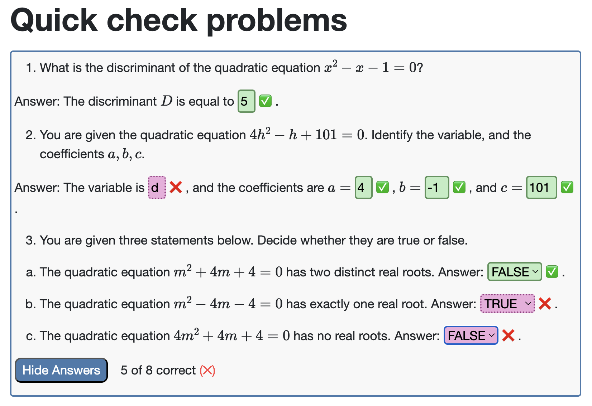
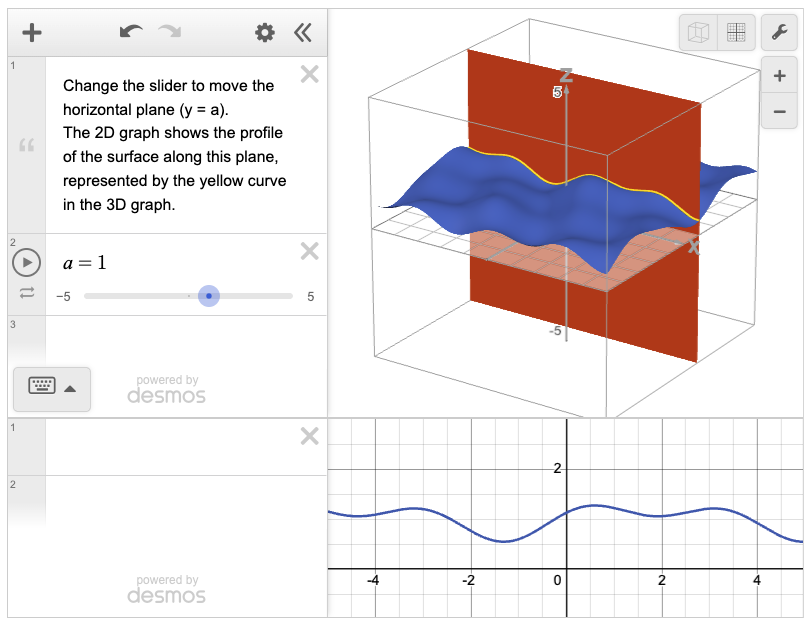
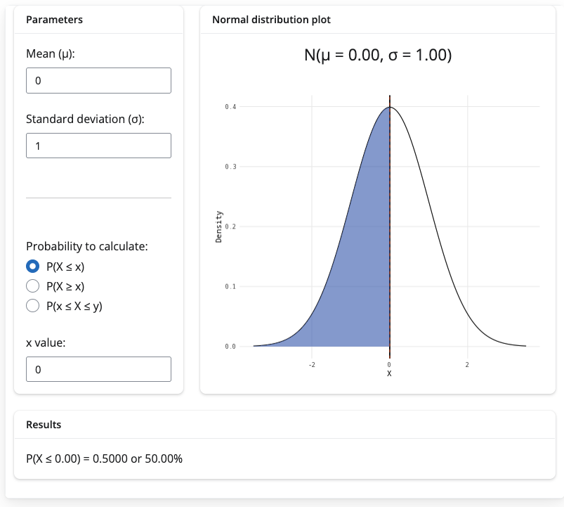
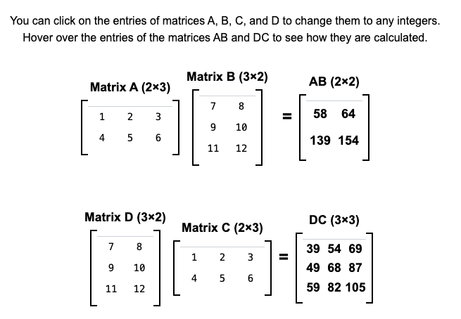

Involving students in creating maths and stats resources
TEMSE seminar
2025-10-08
Original vision: accessibility
want to cater for wide range of learning styles, while retaining technical accessibility
Quarto is a typesetting system that outputs to html, pdf, docx from a single content file:
- accessible html, printable pdf, editable Word documents provided for all materials

Top of Guide: Arithmetic on complex numbers
Original vision: freedom of use
want resources to be available anywhere at any time to anyone, with no cost (an open educational resource)

Excerpt from starmast.org licensing page
Original vision: granular


VIP outputs from students
- interactive figures: using Desmos API, R Shiny, and (soon) html - leveraging generative AI to help




VIP outputs from students
content: guides on algebra, geometry, calculus, stats…
accessibility work: discussions with disability charities, investigating multiple Quarto themes, mp3 narration of guides
Top of Guide: Arithmetic on complex numbers
VIP outputs from students


VIP outputs from students
- website backend: domain name, security, search engine optimisation, hosting, custom website style, cookies, analytics, feedback boxes, emails, mailing list, progress trackers…

Feedback box written by a second-year and final year student